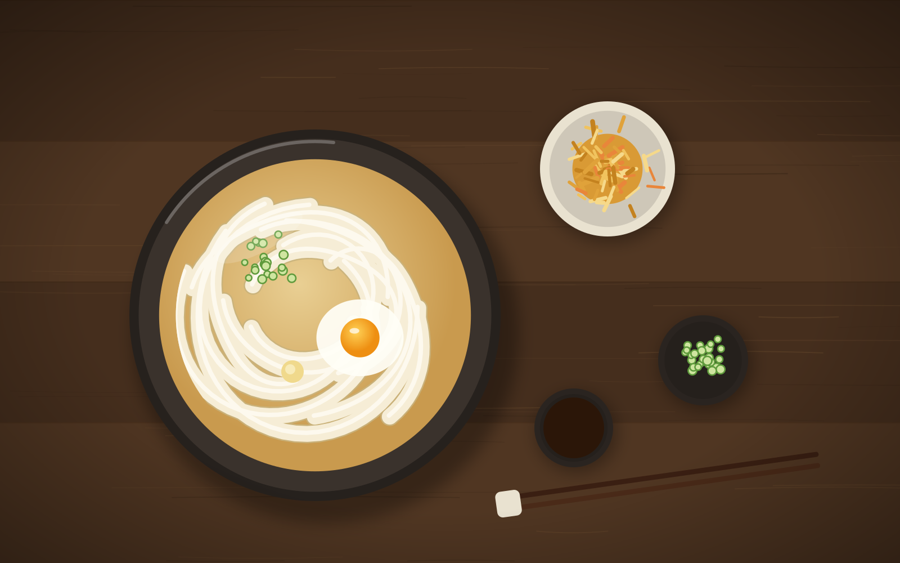
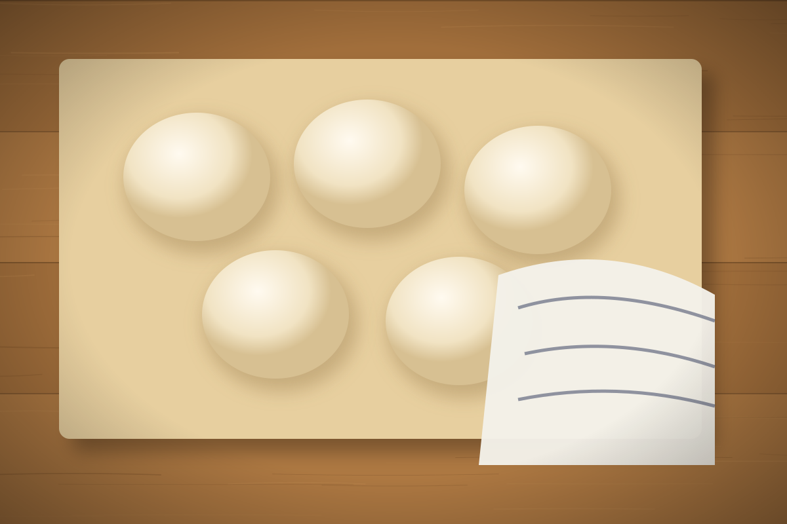
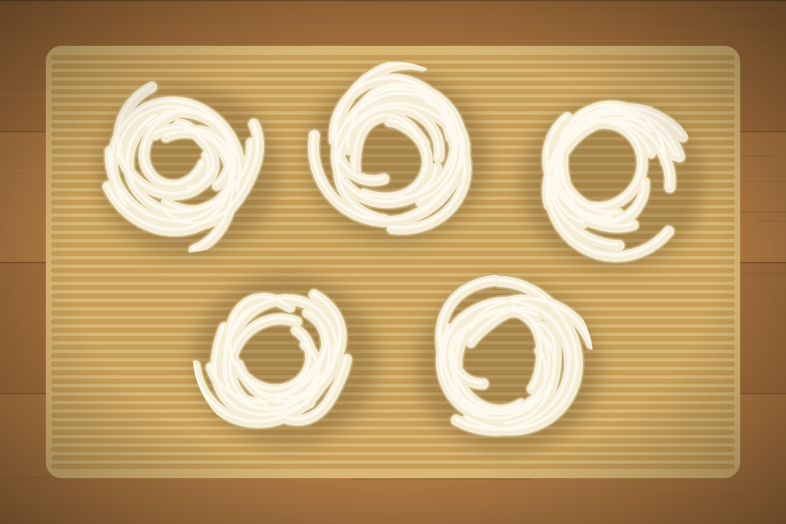

待った分だけ、うまくなる。
詳しくはこちらおすすめ・限定メニュー

定番メニュー


トピックス・お得な情報
-
トピックス
待った分だけ、うまくなる。
豊史製麺が大切にするのは、急がないこと。生地をひと晩寝かせて引き出した小麦の甘みを、いちばん素直に味わえる「ぶっかけ（並）」は380円。今日も、きのう仕込んだ一杯をどうぞ。
詳しく見る -
キャンペーン
寝かせ感謝祭2026
豊史製麺はおかげさまで、11月21日に創業8周年を迎えます。これまでの感謝を込めて、熟成時間を倍にした「ふた晩うどん」など3つの企画をご用意しました。
詳しく見る -
イベント
豊史うどん夜市2026
生地を仕込む夜の厨房を、一夜かぎりで公開します。寝かせ番による足踏み実演や、仕込みたてと熟成後の食べ比べなど、うどんがもっと好きになる特別な夜です。
詳しく見る -
トピックス
 定番に、
定番に、
仲間入り。人気の限定4品人気の期間限定商品が、定番メニューに仲間入り
期間限定商品のうち、特にご好評をいただいた「ふた晩カレーうどん」など全4種が定番メニューになりました。
詳しく見る -
豊史製麺の取り組み
豊史お子さま ねんねセット
やわらかめに茹でた熟成うどんに、天ぷらとジュースがついて280円。家族みんなで、ゆっくりどうぞ。
詳しく見る -
豊史製麺の取り組み
 無料の薬味が
無料の薬味が
9種類！組合せは4000通り以上柚子こしょうと揚げ玉で、無料の薬味が9種類！
無料の薬味とトッピングが全9種類に。その組合せで広がる楽しみ方は4000通り以上。あなただけの一杯を見つけてください。
詳しく見る
生地は、ひと晩。
低温でじっくり寝かせて、
小麦の甘みを引き出します。
豊史製麺は、急ぎません。

豊史製麺は、一軒一軒に熟成庫。
ここでは「寝かせ番」たちが、
毎晩、生地の機嫌を
うかがっています。

令和8年
11月
13日
本日ご紹介する
寝かせ番
サービス・店舗のご利用について

動画ギャラリー
今日の一杯を、
探しに行こう。